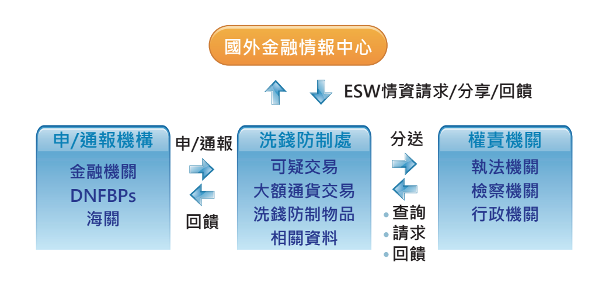

「洗錢防制處自108年底陸續接獲銀行申報案關對象，初篩情報26件分送予友軍及業務單位參處，協助勾勒出太子集團組織輪廓，並掌握其在台洗錢及資產持有概況。」
這組數字，是調查局長陳白立日前在立法院面對有關太子集團案件質詢時所提出的說明。數據本身精確，卻也引發外界質疑：當金融機構已多次申報異常交易，調查局亦掌握相關情資時，洗錢防制體系究竟能在什麼階段發揮實質作用？
隨著太子集團案件曝光，這個平時較少受到外界關注的單位——調查局洗錢防制處——開始浮上檯面。洗錢防制處如何運作？他們能掌握哪些資訊，又有哪些制度上的限制？本篇報導採訪兩位洗錢防制處調查官，試圖從制度設計與數據分析出發，回答這些問題。
洗錢防制處隸屬於法務部調查局，為我國唯一的金融情報中心（Financial Intelligence Unit, FIU）。其主要職責在於接收、分析並分送疑似涉及洗錢或資恐之交易資料，以及與洗錢、前置犯罪及資恐相關的其他金融情資。
洗錢防制作業流程圖
圖表來源：2024年洗錢防制工作年報
洗錢防制處游調查官表示，其工作核心在於依法受理來自金融業者、指定之非金融事業或人員申報，以及海關通報的相關情資，並進行加值分析。若分析結果顯示有查緝犯罪、追討不法所得、健全洗錢防制制度、維護金融秩序或強化國際合作之必要，即會研編成金融情報，分送國內外相關權責機關。
在太子集團案件中，洗錢防制處亦依循相同程序處理情資。她指出：「我們接獲52起可疑交易申報，經綜整相關資料後，陸續研編加值金融情報26件，並即時分送予相關執法機關及局內業務單位。」
但外界質疑，為何台灣未能在美國政府通報或行動之前，對太子集團展開起訴。對此，游調查官說明，從調查局的制度定位來看，洗錢防制處的功能在於發現與分析異常金流，並將相關情資提供給主管機關或檢調單位參考。
她強調，調查局及調查官屬於偵查輔助機關，並無起訴權限，檢察官才是偵查與起訴的主體。因此，是否立案偵辦、何時啟動偵查，仍須由檢察官依據整體證據判斷。
隨著105年《洗錢防制法》修法上路，近9年來，違反洗錢防制法案件數量呈現上升趨勢。
在107年最新一次修法中，最高法院刑事大法庭裁定統一見解，認為人頭帳戶提供者、詐騙集團車手在一定條件下亦可成立一般洗錢罪，特定犯罪範圍的擴大，進一步推升相關案件數量。
資料來源：警政署統計室
根據統計，自2017年至2024年，洗錢防制處接獲的可疑交易申報（STR）年申報量大致維持在2萬至3萬6千件之間。2018年受修法影響，申報量達到35,869件，其中本國銀行申報件數占七成以上。
資料來源：洗錢防制工作年報
但是，黃調查官指出，上萬件申報並不代表等量的犯罪案件，多數情資會經過整併後，以特定對象為單位進行分析與分送。同時，她指出，洗錢防制處在無法立即確認犯罪事證時，會先將情資存入資料庫。當日後出現相同個人、法人或公司再次被申報時，相關資料即可被重新提取、整併分析，進而研編成金融情報分送相關機關。
以2024年為例，申報案件中約74%會進入STR資料庫，20%由打詐專案處理，僅約3.79%與1.75%分別由執法、院檢及其他權責機關，或調查局辦案單位進一步處理。
然而，對多數民眾而言，「可疑交易申報」與「金融情報分析」仍屬抽象概念。究竟哪些行業，近年來最容易成為洗錢活動的溫床？洗錢防制處及相關主管機關，通常又將哪些產業列為重點關注對象？
【互動卡片｜洗錢與資恐弱點辨識結果】（點擊卡片，看看哪個產業是高風險產業？）
除了本國銀行申報件數平均占歷年申報量7成，虛擬資產業者的可疑交易申報呈現明顯成長。自2022年的227件，上升至2023年的918件，增幅接近四倍。此次美國政府在太子集團案件中，亦查獲價值超過140億美元的比特幣，並指控柬埔寨商業帝國太子集團（Prince
Group）創辦人涉嫌操縱大規模加密貨幣詐騙案，更凸顯虛擬資產風險。
根據《2024年國家洗錢、資恐及資武擴散風險評估報告》，由於虛擬資產具高度匿名性、去中心化、跨境快速移轉及高經濟價值等特性，提供虛擬資產服務之事業或人員，已被列為「非常高」風險的產業別。
游檢察官表示，因應虛擬資產犯罪風險上升，政府於113年進行洗錢防制法重大修正，自113年7月起，提供虛擬資產服務之事業或人員（VASP）須向金管會完成登記後，方得合法營業。未完成登記者，將構成違法行為。
此外，金管會檢查局亦加強查核，2025年已對11家虛擬資產業者裁罰，累計裁處金額超過1,300萬元。
隨著洗錢型態日益複雜，金融與司法體系在防制洗錢上，長期處於「我在明、敵在暗」的不對稱狀態。洗錢防制的演進，往往是一種回應社會變遷、修補制度缺口與因應新型犯罪的「反應式修法」過程。
黃調查官表示，金融情資的申報是一件不斷持續的進程，洗錢案沒有查完的一天。洗錢防制處未來將持續加強跨部會合作與國際情報交換，強化監理與風險控管，降低非法資金進入我國金融體系的可能性。